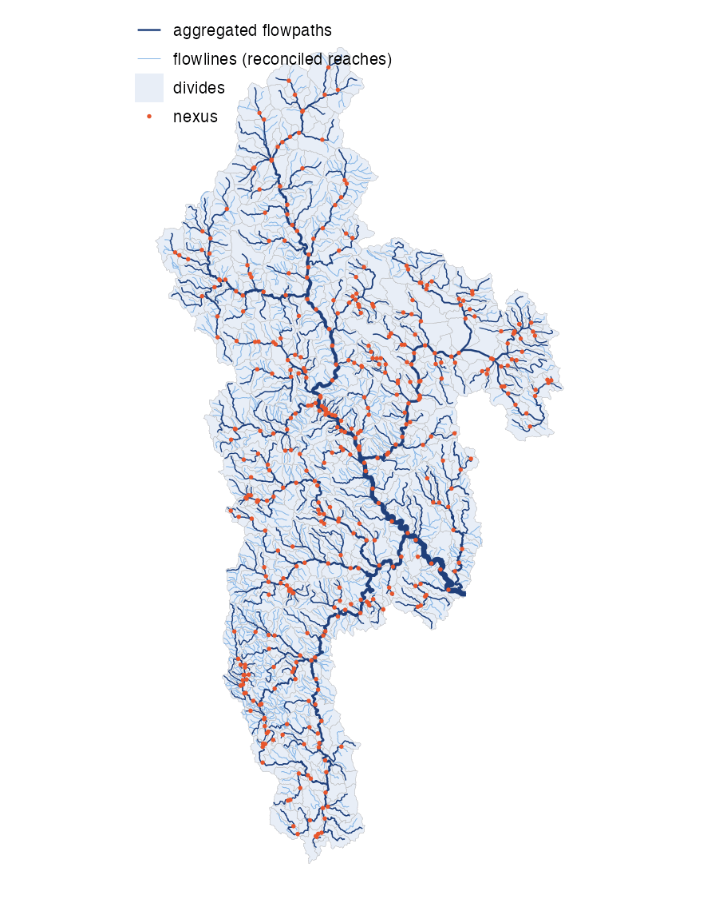
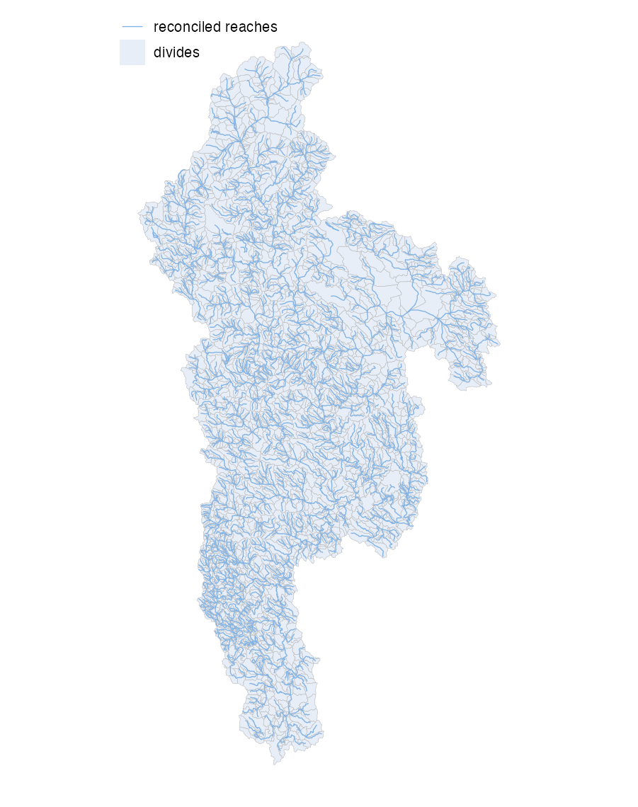

hydrofabric builds hydrologic modeling fabrics from a reference hydrographic network. It produced the NOAA Office of Water Prediction’s National Water Model v4 hydrofabric for the NextGen framework, covering SuperCONUS, Alaska, Hawaii and Puerto Rico / Virgin Islands.

Installation
# install.packages("remotes")
remotes::install_github("lynker-spatial/hydrofabric")Requires GDAL >= 3.5, GEOS >= 3.11, PROJ >= 9, the arrow package for the parquet inputs, and the mapshaper command-line tool (npm install -g mapshaper). The hfutils dependency installs automatically.
Pipeline
A build runs in four phases: refactor the reference network against flow direction and accumulation grids, aggregate it to distribution scale, package it as a NextGen fabric, and merge the per-VPU products into domains with globally unique identifiers. Every VPU must pass its invariant checks before it is merged.




The terms used here (flowpath, divide, flowline, nexus, hydrolocation, VPU) are those of the hydrofabric data model.
Usage
One VPU:
library(hydrofabric)
run_pipeline(
vpuid = "01",
reference_gpkg = "reference.gpkg",
hydrolocations_gpkg = "hydrolocations.gpkg",
fdr_path = "fdr.vrt",
fac_path = "fac.vrt",
out_dir = "out"
)The product is out/vpu_01/ngen_vpu01.gpkg; intermediates and the invariant record are in out/vpu_01/work/. Each phase is also its own function: refactor_fabric(), aggregate_fabric(), nextgen_fabric() and merge_vpus(). vignette("hydrofabric") covers national builds and parameters.
Reproducing the NWM v4 delivery
The staged inputs come with input_manifest.json, which records every file’s checksum. scripts/run_vpu.R verifies a local copy against it, then builds and merges every VPU:
Output
Each product is a GeoPackage with flowpaths, divides, flowlines, nexus, network, hydrolocations, pois, lakes, and the flowpath-attributes and flowline-attributes routing tables. See vignette("nextgen") for the schema and vignette("invariants") for the checks every product passes.
Tests
The unit and functional tests, including the acyclic and non-dendritic network checks, run with testthat::test_dir("tests/testthat"). vignette("tests") describes what they cover.
License
Code is licensed under Apache-2.0 and data under CC BY-SA 4.0, both © Lynker Corporation. CC BY-SA is required by TDX-Hydro, which Alaska and the CONUS reference build on; it limits redistribution, not use. Each product carries its license and source attribution in its own metadata. See NOTICE and THIRD_PARTY_NOTICES.md.